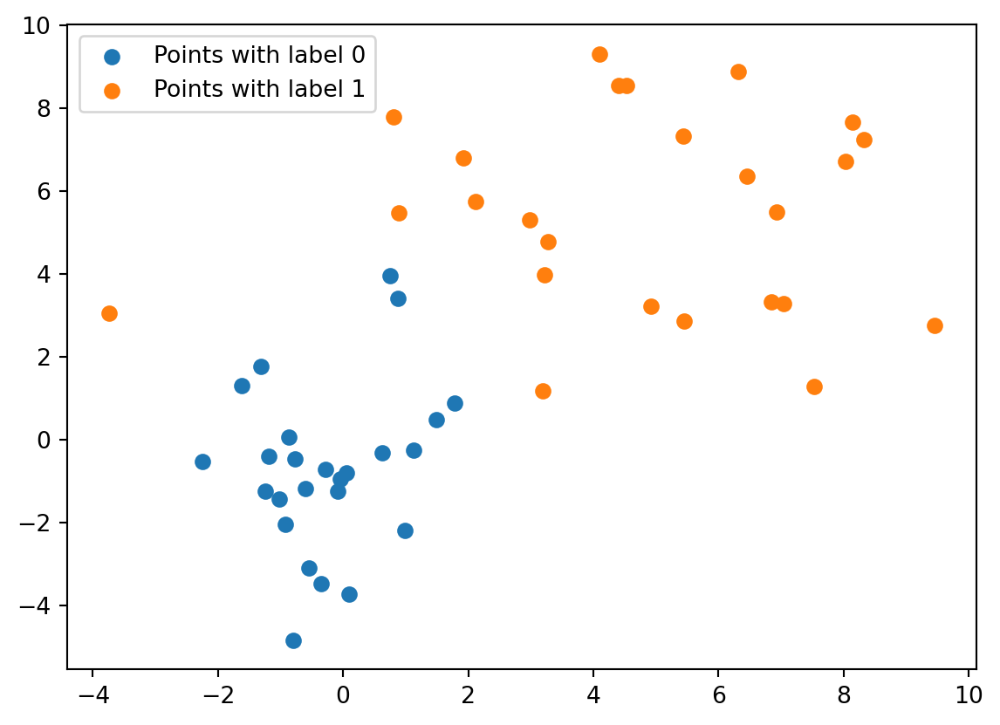
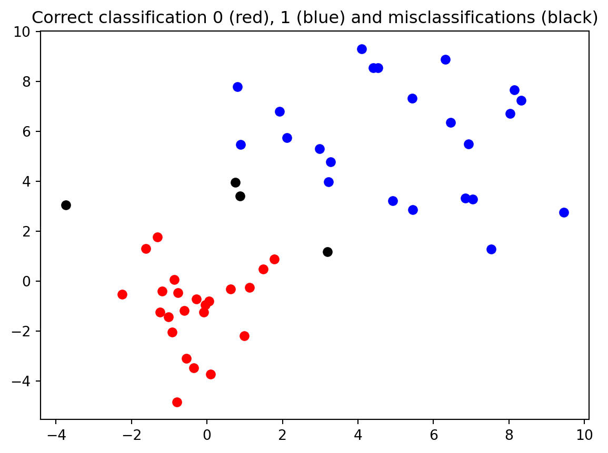
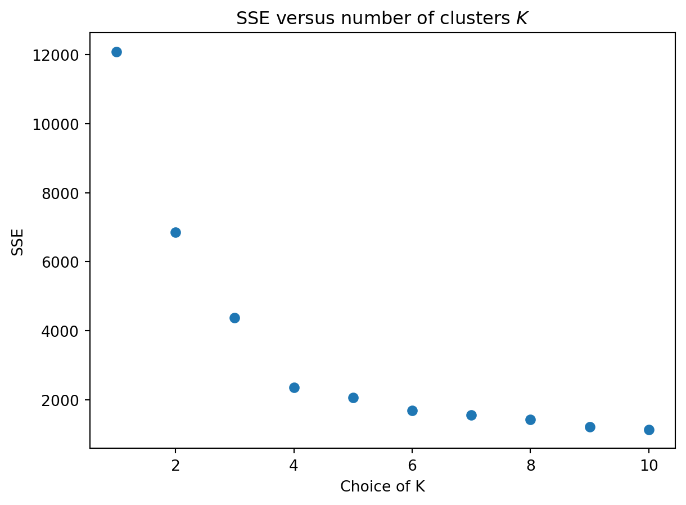

import numpy as np
import matplotlib.pyplot as plt
from sklearn.datasets import make_blobs
from sklearn.linear_model import LogisticRegression
# Set numerical precision for printing
np.set_printoptions(precision=3, floatmode="fixed", suppress=True)Lecture 9: Sections 10.1-10.2
Solutions to the exercises
Make sure to import NumPy, Matplotlib and Scikit-learn to be able to complete all the exercises.
Disclaimer: For some questions where random numbers are involved, your output may differ from the example when an exercise uses random numbers.
This can happen if, despite the use of a random seed, you generate random numbers differently from the way the solution generates them. This does not necessarily mean that your answer is wrong. If you are unsure about your solution, ask the teacher.
As an example, the shape of an array that you fill with random numbers can have an influence on the outcome: The commandnp.random.randn(3,4)does not yield the same 3 \times 4 array asnp.random.randn(4,3).T.
Try this yourself by running the script below in which you can changenp.random.randn(3,4)tonp.random.randn(4,3).Tand observe the difference.
import numpy as np
# Set the random seed
np.random.seed(42)
# Generate randon normal array of shape (3,4)
x = np.random.randn(3,4)
# Print array
print(x)Question 1
In this exercise, we will fit a binary logistic regression model with two label classes and n features, i.e., we have data points x_i = [x_{i0},\dots,x_{i(n-1)}] \in \mathbb{R}^n. We first write a function that can generate (synthetic) input data for us.
The data set will consist of the set D_0 = \{x_0,\dots,x_{m-1}\} \subset \mathbb{R}^n whose points will get label 0, and the set D_1 = \{x_m,\dots,x_{2m-1}\} \subset \mathbb{R}^n whose points will get label 1, for some m \in \mathbb{N}.
The entries of the points x_i = [x_{i0},\dots,x_{i(n-1)}] \in D_0 for i = 0,\dots,m-1 will be independent and normally distributed with x_{ij} having mean \mu_j^0 and standard deviation \sigma_j^0 for j = 0,\dots,n-1. The entries of the points x_i = [x_{i0},\dots,x_{i(n-1)}] \in D_1 for i = m,\dots,2m-1 will be normally distributed with x_{ij} having mean \mu_j^1 and standard deviation \sigma_j^1 for j = 0,\dots,n-1.
A schematic overview is given below for n = 4. \def\colbox#1#2{\boxed{\begin{array}{c} #1\vphantom{x_{2m-1,0}}\\ \overset{\vdots}{\smash{\phantom{x_{2m-1,0}}}}\\ #2\vphantom{x_{2m-1,0}} \end{array}}} \def\boxwidth{\hphantom{\colbox{x_{0,0}}{x_{m-1,0}}}} \def\blockbrace{\left.\vphantom{\colbox{x_{0,0}}{x_{m-1,0}}}\right\}} \def\params#1#2{\substack{(\mu,\sigma)=\\(\mu_{#1}^{#2},\sigma_{#1}^{#2})}} \begin{array}{rcl} & \begin{array}{cccc} \overbrace{\boxwidth}^{\params{0}{0}} & \overbrace{\boxwidth}^{\params{1}{0}} & \overbrace{\boxwidth}^{\params{2}{0}} & \overbrace{\boxwidth}^{\params{3}{0}} \end{array} &\\[-0.3em] x= & \left[ \begin{array}{cccc} \colbox{x_{0,0}}{x_{m-1,0}} & \colbox{x_{0,1}}{x_{m-1,1}} & \colbox{x_{0,2}}{x_{m-1,2}} & \colbox{x_{0,3}}{x_{m-1,3}}\\[0.6em] \colbox{x_{m,0}}{x_{2m-1,0}} & \colbox{x_{m,1}}{x_{2m-1,1}} & \colbox{x_{m,2}}{x_{2m-1,2}} & \colbox{x_{m,3}}{x_{2m-1,3}} \end{array} \right] & \begin{array}{l} \blockbrace\ D_0\\[0.6em] \blockbrace\ D_1 \end{array} \\[-0.3em] & \begin{array}{cccc} \underbrace{\boxwidth}_{\params{0}{1}} & \underbrace{\boxwidth}_{\params{1}{1}} & \underbrace{\boxwidth}_{\params{2}{1}} & \underbrace{\boxwidth}_{\params{3}{1}} \end{array} & \end{array}
- Write a function
synthetic_data()that takes as input four one-dimensional arrays \mu^k = [\mu_0^k,\dots,\mu_{n-1}^k] and \sigma^k = [\sigma_0^k,\dots,\sigma_{n-1}^k] for k = 0,1, and a postive number m. It should return a 2m \times n array x whose rows are the data points x_i for i = 0,\dots,2m-1 as specified above, and a vector y defined by y_i= \left\{ \begin{array}{ll} 0 & i = 0,\dots,m-1 \\ 1 & i = m,\dots,2m-1 \end{array}\right.. Note that the first m rows of x correspond to the data points in D_0, and the last m rows to the data points in D_1. Do not use for-loops.
def synthetic_data(mu1,sigma1,mu2,sigma2,m):
n = np.size(mu1)
# Data points in D_0
D_0 = np.random.normal(loc=mu1, scale=sigma1, size=(m,n))
# Data points in D_1
D_1 = np.random.normal(loc=mu2, scale=sigma2, size=(m,n))
# All data points
x = np.vstack((D_0,D_1))
y = np.hstack((np.zeros(m),np.ones(m)))
return x, y- Test your function on the following input by re-creating the figure below.
# Set the random seed
np.random.seed(3)
mu1 = np.array([0,0])
sigma1 = np.array([1,2])
mu2 = np.array([5,5])
sigma2 = np.array([3,2])
m = 25
x_data, y_data = synthetic_data(mu1,sigma1,mu2,sigma2,m)# Create a figure
plt.figure()
# Plot data points (could do this with a for loop as well; think about this yourself)
plt.scatter(x_data[0:m,0], x_data[0:m,1], label="Points with label 0")
plt.scatter(x_data[m:2*m,0], x_data[m:2*m,1], label="Points with label 1")
# Create legend
plt.legend()
# Show plot
plt.show()
We will next fit a logistic regression model on the data points using the sigmoid function f(z) = \frac{1}{1 + e^{-p(z)}} with p(z) = \alpha + \sum_{i=0}^{n-1} \beta_iz_i for z = [z_0,\dots,z_{n-1}] \in \mathbb{R}^n.
- Write a function
multi_feature_logistic_regression()that takes as input an d \times n two-dimensional array x whose rows represent data points, and an d-dimensional binary vector y with one label per data point. It should output an array [\alpha,\beta_0,\dots,\beta_{n-1}] with the fitted coefficients of the function f above, as well as an array containing the predicted labels for each data point given by thepredict()method.
Call thefit()method on an instance ofLogisticRegressionto carry out this task with thenewton-cgsolver. Check out the documentation ofLogisticRegressionfor more information.
from sklearn.linear_model import LogisticRegression
def multi_feature_logistic_regression(x, y):
# 'liblinear' and 'saga' are suitable,
# but latter gives convergence error on data
multi_logistic = LogisticRegression(solver='newton-cg')
multi_logistic = multi_logistic.fit(x,y)
alpha = multi_logistic.intercept_
beta = multi_logistic.coef_[0]
p_coef = np.hstack((alpha,beta))
return p_coef, multi_logistic.predict(x)- Test your function on the data generated in part b).
p_coef, y_pred = multi_feature_logistic_regression(x_data,y_data)
print("Coefficients of function p are", p_coef)Coefficients of function p are [-2.978 0.496 0.896]Also create the confusion matrix comparing the predicted labels to the true labels of the data points, i.e., the (i,j)-th entry of the matrix contains the number of data points with true label i and predicted label j. The matrix should be the following:
from sklearn.metrics import confusion_matrix
C = confusion_matrix(y_data,y_pred)
print(C)[[23 2]
[ 2 23]]- Create the plot below where all data points with predicted and true label 0 are red, all data points with predicted and true label 1 are blue, and all data points whose predicted labels differ from their true labels are black.
# Create a figure
plt.figure()
# Create Boolean masks for correctly classified points in each class
# and for misclassified points
mask_0 = ((y_data == 0) & (y_pred == 0))
mask_1 = ((y_data == 1) & (y_pred == 1))
mask_wrong = (y_data != y_pred)
masks = [mask_0, mask_1, mask_wrong]
# Create list of colors
colors = ['red','blue','black']
# Scatter plot the three types of points
for i in range(len(masks)):
plt.scatter(x_data[masks[i],0],x_data[masks[i],1],color=colors[i])
# Title
plt.title("Correct classification 0 (red), 1 (blue) and misclassifications (black)")
# Show plot
plt.show()
Question 2
The goal of this exercise is to create an implementation of the K-means algorithm from scratch. The algorithm that is constructed in the following questions takes as input a collection of data points x_0,\dots,x_{n-1} \in \mathbb{R}^d given as the rows of an n \times d array x, with x_i = [x_{i0},\dots,x_{i(d-1)}] for i = 0,\dots,n-1.
We start by creating a function that can be used to choose K initial centers for the K-means algorithm.
- Write a function
init_centers()that takes as input an array x as above, and a number K. It should output a matrix containing K rows chosen uniformly at random (without replacement) from the set of all rows in x. That is, every row is equally likely to be chosen.
Hint: A function from Section 8.1.2 might be useful here.
def init_centers(x,K):
n, d = np.shape(x)
indices = np.random.choice(range(n),size=K,replace=False)
return x[indices]Test your function on the input data below.
# Set the random seed
np.random.seed(3)
# Data points
n, d = 10, 3
x = np.random.rand(n,d)
# Center generation
K = 4
centers = init_centers(x,K)
print(centers)[[0.649 0.278 0.676]
[0.441 0.030 0.457]
[0.591 0.024 0.559]
[0.545 0.780 0.306]]Next we write a function that returns for every row x_i in x the index k \in \{0,\dots,K-1\} of the center in the set \{c_0,\dots,c_{K-1}\} that is closest to x_i in L^2-norm. This is Step 1 from the K-means algorithm as described in Section 10.2.2.
- Write a function
closest()that takes as input an n \times d array whose rows represent data points x_i, and a K \times d array whose rows represent centers c_0,\dots,c_{K-1}. It should output an array of shape (n,) whose entry at index i gives the label/index in \{0,1,\dots,K-1\} of the center that is closest to x_i for i = 0,\dots,n-1. In case of ties, choose the center with the smallest label.
You are allowed to use thedistance_matrixfunction from thescipy.spatialmodule; check the documentation to see how this function works. The functionnp.argmin()might also be useful in your solution. Do not use for-loops in your solution.
from scipy.spatial import distance_matrix
def closest(x,centers):
return np.argmin(distance_matrix(x,centers), axis=1)Test your function on the x and centers arrays generated in the test input of part a).
label_closest = closest(x,centers)
print(label_closest)[3 3 1 1 0 2 1 3 3 0]We continue with a function that takes as input an n \times d array whose rows represent data points x_i for i = 0,\dots,n-1, and a one-dimensional array of size n whose i-th entry is label L_i \in \{0,\dots,K-1\} of data point x_i. The function will output new centers \hat{c}_k = \frac{1}{|G_k|} \sum_{i \in G_k} x_i, where G_k = \{i : L_i = k\} for k = 0,\dots,K-1. This is Step 2 of the K-means algorithm described in Section 10.2.2.
- Write a function
new()that takes as input the arrays described above, and returns a K \times d array with the \hat{c}_k centers as its rows. You are allowed to use one for-loop in your solution. You may assume that |G_k| > 0 for any k, i.e., every center has at least one data point that is closest to it. This also means that every label will appear at least once in the one-dimensional array with labels, and so you can obtain the value K from this array. Furthermore, you may assume that |G_k| > 0 holds in subsequent step of the K-means algorithm (also in later subquestions).
def new(x,L):
# Determine shape of x
n, d = np.shape(x)
# Determine number of clusters (possible because |G_k| > 0 for all k)
K = np.max(L)
# Initialize an array for the new centers
new_centers = np.zeros((K+1,d))
for i in range(K+1):
mask = (L == i)
new_centers[i] = np.mean(x[mask,:],axis=0)
return new_centersTest your function on the x array from the test input of part a), using label_closest as the label array generated in the test input of part b).
new_center = new(x,label_closest)
print(new_center)[[0.436 0.333 0.806]
[0.275 0.217 0.264]
[0.591 0.024 0.559]
[0.575 0.705 0.413]]We now combine the three functions written in parts a)-c) and define our K-means algorithm.
- Write a function
kmeans()that takes as input an n \times d array whose rows represent data points x_i \in \mathbb{R}^d for i = 0,\dots,n-1, a number of clusters K and a number of iterations T. It should perform T iterations of the K-means algorithm (as in Section 10.2.2), where the initial centers are randomly chosen using your function from part a), and where the functions in parts b) and c) are subsequently performed for T iterations.
Your function should output the final centers as well as an array of labels indicating the closest center for every data point at the end of the algorithm.
def kmeans(x,K,T):
centers = init_centers(x,K)
label_closest = closest(x,centers)
for i in range(T):
centers = new(x,label_closest)
label_closest = closest(x,centers)
return centers, label_closestTest your function on the input below, which is the make_blobs data used in Section 10.2.
from sklearn.datasets import make_blobs
# Set the random seed
np.random.seed(3)
# Data generation
r = 5
x_data, _ = make_blobs(
n_samples=200, # n = 200
n_features=2, # d = 2
centers=np.array([[-r,-r],[-r,r],[r,r],[r,-r]]),
cluster_std=2.5,
random_state=32,
)
# Number of iterations
T = 100
# Choice of number of clusters to look for
K = 4
# Run K-means algorithm
centers, label_closest = kmeans(x_data,K,T)
# Print the final centers
print("The final centers are \n", centers)The final centers are
[[-4.747 -4.874]
[-4.527 5.368]
[ 5.187 4.922]
[ 4.502 -5.287]]Note that these centers are fairly close to the centers used to generate the synthetic data.
Question 3
Recall that the quality of a clustering with centers c_0,\dots,c_{K-1} can be measured in terms of the sum of squared errors (SSE)
\begin{array}{ll} \displaystyle \text{SSE}_{x_0,\dots,x_{n-1}}(c_0,\dots,c_{K-1}) & = \displaystyle \sum_{i=0}^{n-1} \min_{k=0,\dots,K-1} ||x_i - c_k||_2^2 \\ & = \displaystyle \sum_{i=0}^{n-1} \min_{k=0,\dots,K-1} \sum_{j=0}^{d-1} (x_{ij} - c_{kj})^2 \end{array}
which aggregates the squared L^2-norm distances of all data points x_i to their closest center. Recall that x_i = [x_{i,0},\dots,x_{i,d-1}] for i = 0,\dots,n-1 and c_k = [c_{k,0},\dots,c_{k,d-1}] for k = 0,\dots,K-1.
- Using your function
closest()from Question 2b), define a functionsse()that takes as input an n \times d array x whose rows represent data points x_i \in \mathbb{R}^d, and a K \times d array whose rows represent cluster centers c_0,\dots,c_{K-1}. It should output the SSE error defined above. Do not use a for-loop.
Hint: Try to understand the piece of code below first. Use the underlying idea to create a matrix whose rows are x_i - c_{k_i} for i = 0,\dots,n-1, where k_i is the index of the center closest to x_i.
z = np.array([[1,4,3,5,6],[8,1,2,3,5],[6,1,7,9,8],[41,1,17,9,18]])
indices = np.array([1,3,2,0,1,2])
print(z[indices])[[ 8 1 2 3 5]
[41 1 17 9 18]
[ 6 1 7 9 8]
[ 1 4 3 5 6]
[ 8 1 2 3 5]
[ 6 1 7 9 8]]Test your function using the x_data and centers arrays from the test input of Question 2d). It should give the following output.
def sse(x,centers):
label_closest = closest(x,centers)
closest_center = centers[label_closest]
return np.sum((x - closest_center)**2)error = sse(x_data,centers)
print(error)2349.133855912266- Write a function
plot_sse_by_Kthat takes as input an n \times d array x whose rows represent data points x_i \in \mathbb{R}^d, and numbers K_{\max} and T. It should construct and display a scatter plot that for every K = 1,\dots,K_{\max} plots the SSE computed using the centers outputted bykmeans(x,K,T)wherekmeans()is the function you constructed in Question 2d).
def plot_sse_by_K(x,Kmax,T):
# Array in which SSE values will be stored
SSE = np.zeros(Kmax)
# Compute SSE values
for K in np.arange(1, Kmax+1):
# Run K-means algorithm
centers, _ = kmeans(x,K,T)
# Compute SSE
SSE[K-1] = sse(x, centers)
# Create a figure
plt.figure()
# Create scatter plot
plt.scatter(np.arange(1,Kmax+1),SSE)
# Add axes information
plt.xlabel("Choice of K")
plt.ylabel("SSE")
# Add title
plt.title("SSE versus number of clusters $K$")
# Show plot
plt.show()
return Test your function for K_{\max} = 10, T = 100, and as x the array x_data created in the test input of Question 2d). Your figure should resemble the one below. Can you give an interpretation of what you see in the figure?
# Input parameters
T = 100
Kmax = 10
# Create scatter plot
plot_sse_by_K(x_data,Kmax,T)